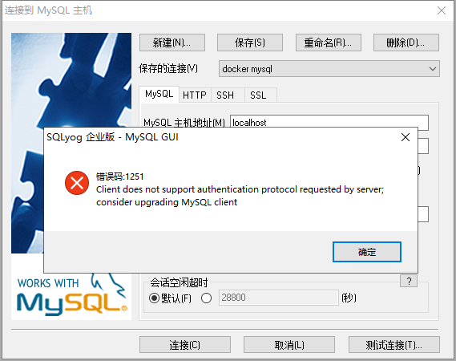
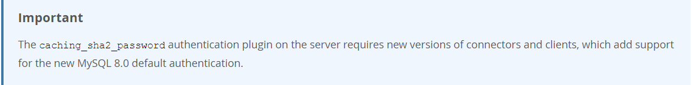

今天接着上一篇的内容继续来学习安装运行mysql。建议先阅读第一篇：windows安装docker
如果想知道mysql镜像具体有哪几个版本，需要去docker hub查看。
地址如下： https://hub.docker.com/r/library/
命令如下：
docker pull 镜像名称:版本号打开命令窗口输入
docker pull mysql:8.0等待几分钟就完成了，然后输入以下命令查看镜像
docker images命令如下：
docker run --name mysql8.0 -e MYSQL_ROOT_PASSWORD=123456 -d -p 23306:3306 mysql:8.0解释一下上面的命令的具体含义
docker run // 启动容器
--name mysql8.0 // 指定容器名称为mysql8.0
-e MYSQL_ROOT_PASSWORD=123456 // 配置环境变量，指定root用户的密码为123456
-d // 是否后台启动，默认false
-p 23306:3306 // 将3306端口映射出来为23306进行访问
mysql:8.0 // 镜像名称第三步完成后一个docker容器就算起来了，我们用客户端连接数据库发现报错了。

主要原因是mysql服务器要求的认证插件版本与客户端不一致造成的。
使用命令 docker exec -it mysql8.0 /bin/bash 进入容器，然后登录mysql服务，命令如下：mysql -uroot -p 123456，登录成功后，use mysql ，使用sqlselect user,plugin from user 查看认证插件。
可以看到root用户使用的plugin是caching_sha2_password，mysql官方网站有如下说明：

意思是说caching_sha2_password是8.0默认的认证插件，必须使用支持此插件的客户端版本。两种方式一种是升级客户端，另一种是修改插件认证为 mysql_native_password，我们看一下第二种。
// 第一:修改root的密码为'root'，摒弃原来的旧密码。第二：使用mysql_native_password对新密码进行编码。
ALTER USER 'root'@'localhost' IDENTIFIED WITH mysql_native_password BY 'root';
ALTER USER 'root'@'%' IDENTIFIED WITH mysql_native_password BY 'root';
// 刷新权限
FLUSH PRIVILEGES; 这样就完成了，客户端可以正常登录。
1.docker images // 查看镜像
2.docker run 镜像名称 // 生成一个正在运行的容器实例
3.docker stop 容器名称 // 停止容器
4.docker rm 容器名称 // 删除容器
5.docker start 容器名称 // 启动容器
6.docker restart 容器名称 //重启容器
7.docker rmi 镜像名称 // 删除镜像
8.docker exec -it 容器名称 /bin/bash // 进入容器
9.docker ps // 显示正在运行的所有容器
10.docker ps -a // 显示所有容器（包括已经停止的）
11.docker pull 镜像名称:版本号 // 拉取镜像如果文章对您有帮助，请记得点赞关注哟~
欢迎大家关注我的公众号<情系IT>，每日技术推送文章供大家学习参考。